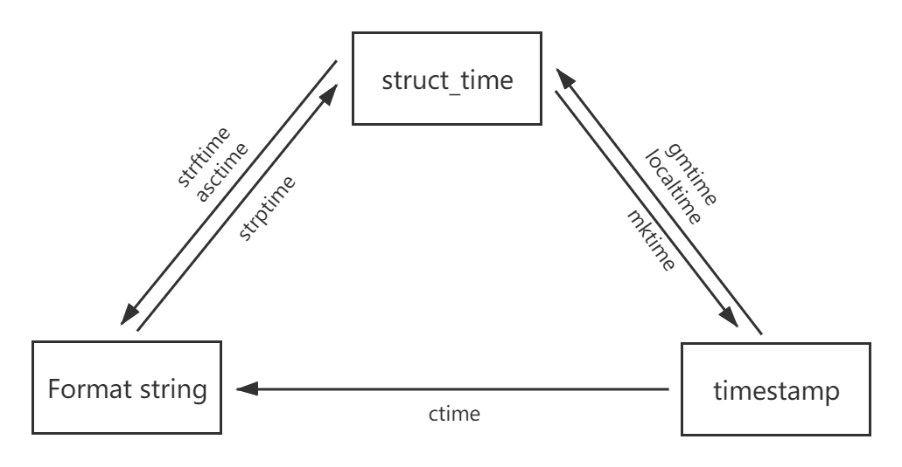

Python常用基础模块
一、os模块
os模块是与操作系统交互的一个接口
1. 文件与目录
1
2
3
4
5
6
7
8
9
10
11
12 | os.makedirs('dirname1/dirname2') #可生成多层递归目录
os.removedirs('dirname1') #若目录为空，则删除，并递归到上一级目录，如若也为空，则删除，依此类推
os.mkdir('dirname') #生成单级目录；相当于shell中mkdir dirname
os.rmdir('dirname') #删除单级空目录，若目录不为空则无法删除，报错；相当于shell中rmdir dirname
os.listdir('dirname') #列出指定目录下的所有文件和子目录，包括隐藏文件，并以列表方式打印
os.remove() #删除一个文件
os.rename("oldname","newname") #重命名文件/目录
os.system("bash command") #运行shell命令，直接显示
os.popen("bash command").read() #运行shell命令，获取执行结果
os.getcwd() #获取当前工作目录，即当前python脚本工作的目录路径
os.chdir("dirname") #改变当前脚本工作目录；相当于shell下cd
|
2. os.path
1
2
3
4
5
6
7
8
9
10
11
12 | os.path.abspath(path) #返回path规范化的绝对路径
os.path.split(path) #将path分割成目录和文件名二元组返回
os.path.dirname(path) #返回path的目录。其实就是os.path.split(path)的第一个元素
os.path.basename(path) #返回path最后的文件名。如何path以／或\结尾，那么就会返回空值。即os.path.split(path)的第二个元素
os.path.exists(path) #如果path存在，返回True；如果path不存在，返回False
os.path.isabs(path) #如果path是绝对路径，返回True
os.path.isfile(path) #如果path是一个存在的文件，返回True。否则返回False
os.path.isdir(path) #如果path是一个存在的目录，则返回True。否则返回False
os.path.join(path1[, path2[, ...]]) #将多个路径组合后返回，第一个绝对路径之前的参数将被忽略
os.path.getatime(path) #返回path所指向的文件或者目录的最后访问时间
os.path.getmtime(path) #返回path所指向的文件或者目录的最后修改时间
os.path.getsize(path) #返回path的大小
|
3. os.stat('path/filename')
获取文件/目录信息 的结构说明
1
2
3
4
5
6
7
8
9
10
11
12 | stat 结构:
st_mode: inode 保护模式
st_ino: inode 节点号。
st_dev: inode 驻留的设备。
st_nlink: inode 的链接数。
st_uid: 所有者的用户ID。
st_gid: 所有者的组ID。
st_size: 普通文件以字节为单位的大小；包含等待某些特殊文件的数据。
st_atime: 上次访问的时间。
st_mtime: 最后一次修改的时间。
st_ctime: 由操作系统报告的"ctime"。在某些系统上（如Unix）是最新的元数据更改的时间，在其它系统上（如Windows）是创建时间（详细信息参见平台的文档）。
|
4. os模块的属性
| os.sep #输出操作系统特定的路径分隔符，win下为"\\",Linux下为"/"
os.linesep #输出当前平台使用的行终止符，win下为"\r\n",Linux下为"\n"
os.pathsep #输出用于分割文件路径的字符串 win下为;,Linux下为:
os.name #输出字符串指示当前使用平台。win->'nt'; Linux->'posix'
|
二、sys模块
sys模块是与python解释器交互的一个接口
| sys.argv #命令行参数List，第一个元素是程序本身路径
sys.exit(n) #退出程序，正常退出时exit(0),错误退出sys.exit(1)
sys.version #获取Python解释程序的版本信息
sys.path #返回模块的搜索路径，初始化时使用PYTHONPATH环境变量的值
sys.platform #返回操作系统平台名称
|
三、时间模块
表示时间的三种方式:时间戳、元组(struct_time)、格式化的时间字符串
1 时间戳(timestamp) ：通常来说，时间戳表示的是从1970年1月1日00:00:00开始按秒计算的偏移量。
2 格式化的时间字符串(Format String)： ‘1999-12-06’
| 格式 |
说明 |
| %m |
月份（01-12） |
| %d |
月内中的一天（0-31） |
| %H |
24小时制小时数（0-23） |
| %I |
12小时制小时数（01-12） |
| %M |
分钟数（00=59） |
| %S |
秒（00-59） |
| %a |
本地简化星期名称 |
| %A |
本地完整星期名称 |
| %b |
本地简化的月份名称 |
| %B |
本地完整的月份名称 |
| %c |
本地相应的日期表示和时间表示 |
| %j |
年内的一天（001-366） |
| %p |
本地A.M.或P.M.的等价符 |
| %U |
一年中的星期数（00-53）星期天为星期的开始 |
| %w |
星期（0-6），星期天为星期的开始 |
| %W |
一年中的星期数（00-53）星期一为星期的开始 |
| %x |
本地相应的日期表示 |
| %X |
本地相应的时间表示 |
| %Z |
当前时区的名称 |
| %% |
%号本身 |
3 元组(struct_time) ：struct_time元组共有9个元素共九个元素:(年，月，日，时，分，秒，一年中第几周，一年中第几天等）
| 索引（Index） |
属性（Attribute） |
值（Values） |
| 0 |
tm_year（年） |
比如2011 |
| 1 |
tm_mon（月） |
1 - 12 |
| 2 |
tm_mday（日） |
1 - 31 |
| 3 |
tm_hour（时） |
0 - 23 |
| 4 |
tm_min（分） |
0 - 59 |
| 5 |
tm_sec（秒） |
0 - 60 |
| 6 |
tm_wday（weekday） |
0 - 6（0表示周一） |
| 7 |
tm_yday（一年中的第几天） |
1 - 366 |
| 8 |
tm_isdst（是否是夏令时） |
默认为0 |
1.time
| >>> import time
# 1.时间戳
>>> time.time()
1580712170.377099
# 2.时间字符串
>>> time.strftime("%Y-%m-%d %H:%M:%S")
'2020-02-03 14:43:38'
# 3.时间元组
>>> time.localtime()
time.struct_time(tm_year=2020, tm_mon=2, tm_mday=3, tm_hour=14, tm_min=43, tm_sec=52, tm_wday=0, tm_yday=34, tm_isdst=0)
|
时间格式转换

1. 时间戳与结构化时间
| # UTC时间，与英国伦敦当地时间一致
>>> time.gmtime()
time.struct_time(tm_year=2020, tm_mon=2, tm_mday=3, tm_hour=7, tm_min=6, tm_sec=4, tm_wday=0, tm_yday=34, tm_isdst=0)
# 当地时间
>>> time.localtime()
time.struct_time(tm_year=2020, tm_mon=2, tm_mday=3, tm_hour=15, tm_min=6, tm_sec=25, tm_wday=0, tm_yday=34, tm_isdst=0)
|
1.1 时间戳-->结构化时间
| >>> import time
>>> time.localtime(1580713662)
time.struct_time(tm_year=2020, tm_mon=2, tm_mday=3, tm_hour=15, tm_min=7, tm_sec=42, tm_wday=0, tm_yday=34, tm_isdst=0)
|
1.2 结构化时间-->时间戳
| >>> import time
>>> time_tuple = time.localtime(1500000000)
>>> time.mktime(time_tuple)
1500000000.0
|
2. 结构化时间与字符串时间
2.1 结构化时间-->字符串时间
| # 1.time.strftime("格式定义","结构化时间") 结构化时间参数若不传，则显示当前时间
>>>time.strftime("%Y-%m-%d %X")
'2017-07-24 14:55:36'
>>>time.strftime("%Y-%m-%d",time.localtime(1500000000))
'2017-07-14'
# 2.time.asctime(结构化时间) 如果不传参数，直接返回当前时间的格式化串
>>>time.asctime(time.localtime(1500000000))
'Fri Jul 14 10:40:00 2017'
>>> time.asctime()
'Mon Feb 3 15:46:50 2020'
|
2.2 字符串时间-->结构化时间
| #time.strptime(时间字符串,字符串对应格式)
>>>time.strptime("2017-03-16","%Y-%m-%d")
time.struct_time(tm_year=2017, tm_mon=3, tm_mday=16, tm_hour=0, tm_min=0, tm_sec=0, tm_wday=3, tm_yday=75, tm_isdst=-1)
>>>time.strptime("07/24/2017","%m/%d/%Y")
time.struct_time(tm_year=2017, tm_mon=7, tm_mday=24, tm_hour=0, tm_min=0, tm_sec=0, tm_wday=0, tm_yday=205, tm_isdst=-1)
|
3. 时间戳与字符串时间
| # time.ctime(时间戳) 如果不传参数，直接返回当前时间的格式化串
>>> time.ctime()
'Mon Feb 3 15:48:36 2020'
>>> time.ctime(1500000000)
'Fri Jul 14 10:40:00 2017'
|
计算时间差
| >>> import time
>>> true_time=time.mktime(time.strptime('2017-09-11 08:30:00','%Y-%m-%d %H:%M:%S'))
>>> time_now=time.mktime(time.strptime('2017-09-12 11:00:00','%Y-%m-%d %H:%M:%S'))
>>> dif_time=time_now-true_time
>>> struct_time=time.gmtime(dif_time)
>>> print('过去了%d年%d月%d天%d小时%d分钟%d秒'%(struct_time.tm_year-1970,struct_time.tm_mon-1,
... struct_time.tm_mday-1,struct_time.tm_hour,
... struct_time.tm_min,struct_time.tm_sec))
过去了0年0月1天2小时30分钟0秒
|
2. datetime
datatime模块重新封装了time模块，提供了date,time,datetime,timedelta,tzinfo五个类
1. date类
1. 静态方法和字段
| # date对象多能表示的最大日期
print(datetime.date.max) # 9999-12-31
# date对象多能表示的最小日期
print(datetime.date.min) # 0001-01-01
# date对象表示日期的最小单位
print(datetime.date.resolution) # 1 day, 0:00:00
# 返回一个表示当前本地日期的date对象；
print(datetime.date.today()) # 2020-03-12
# 根据给定的时间戮，返回一个date对象
print(datetime.date.fromtimestamp(time.time())) # 2020-03-12
|
2. 对象的属性和方法
1、 date对象的属性
| d = datetime.date(2020,3,13)
print(d.year) # 2020
print(d.month) # 3
print(d.day) # 13
|
2、 date对象的方法
1
2
3
4
5
6
7
8
9
10
11
12
13
14
15
16 | d = datetime.date(2020,3,13)
# 生成一个新的日期对象，用参数指定的年，月，日代替原有对象中的属性。（原有对象仍保持不变）
d2=d.replace(2020,3,12)
print(d2.day) # 12
# 返回日期对应的time.struct_time对象
print(d.timetuple()) # time.struct_time(tm_year=2020, tm_mon=3, tm_mday=13, tm_hour=0, tm_min=0, tm_sec=0, tm_wday=4, tm_yday=73, tm_isdst=-1)
# 返回一周中的第几天，如果是星期一，返回0
print(d.weekday()) # 4
# 返回一周中的第几天，如果是星期一，返回1
print(d.isoweekday()) # 5
# 返回一个元组,格式如(year，month，day)
print(d.isocalendar()) # (2020, 11, 5)
# 返回格式如'YYYY-MM-DD’的字符串
print(d.isoformat()) # 2020-03-13
# 格式化输出时间
print(d.strftime('%Y-%m-%d'))
|
2. time类的属性
1. time类属性
| t = datetime.time(10,30,25)
# time类能表示的最小时间
print(datetime.time.min) # 00:00:00
# time类能表示的最大时间
print(datetime.time.max) # 23:59:59.999999
# 时间的最小单位
print(datetime.time.resolution) # 0:00:00.000001
|
2. time对象的属性和方法
1
2
3
4
5
6
7
8
9
10
11
12 | t = datetime.time(10,30,25)
# time对象的属性
print(t.hour) # 10
print(t.minute) # 30
print(t.second) # 25
print(t.microsecond) # 0
t = datetime.time(10,30,25)
# 返回型如"HH:MM:SS"格式的字符串
print(t.isoformat()) # 10:30:25
# 格式化时间
print(t.strftime("%H:%M:%S")) # 10:30:25
|
3. datetime类
1. datetime 方法和属性
1
2
3
4
5
6
7
8
9
10
11
12
13
14
15
16
17
18
19
20
21
22
23 | # 返回表示当前时间的datetime对象
now = datetime.datetime.today()
print(now) # 2020-03-13 23:00:09.199437
print(type(now)) # <class 'datetime.datetime'>
# 获取当前世界时间
print(datetime.datetime.utcnow()) # 2020-03-13 15:59:36.123860
# 当前本地时间的datetime对象
now = datetime.datetime.now()
print(now) # 2020-03-13 23:02:27.245569
# 返回结构化时间
print(now.timetuple()) # time.struct_time(tm_year=2020, tm_mon=3, tm_mday=13, tm_hour=23, tm_min=38, tm_sec=3, tm_wday=4, tm_yday=73, tm_isdst=-1)
# 返回星期几
print(now.weekday()) # 4
# 返回时间元组
print(now.isocalendar()) # (2020, 11, 5)
# 返回'YYYY-MM-DD HH:MM:SS.mmmmmm'格式的时间
print(now.isoformat()) # 2020-03-13T23:45:03.656919
# 格式化时间
print(now.strftime("%Y-%m-%d %H:%M:%S")) # 2020-03-13 23:50:55
print(now.ctime()) # Fri Mar 13 23:51:20 2020
|
- datetime.now()
| # 获取当前本地时间
>>> datetime.now()
datetime.datetime(2020, 2, 3, 16, 11, 20, 441441)
# 获取当前世界时间
>>> datetime.utcnow()
datetime.datetime(2020, 2, 3, 8, 11, 32, 641304)
|
四、re模块
正则表达式是包含文本和特殊字符的字符串，该字符串描述一个可以识别各种字符串的模式。Python 通过标准库中的re模块来支持正则表达式。
模式匹配：
- 搜索（search）：在字符串任意部分中搜索匹配的模式
- 匹配（match）：判断一个字符串能否从起始处全部或部分地匹配某个模式
1. 正则基础
正则表达式的单字符匹配（特殊字符）
| 字符 |
描述 |
. |
匹配任意一个字符（除了\n） |
[] |
匹配[]列举的字符 |
\d |
匹配数字，即[0-9] |
\D |
匹配非数字，即[^0-9] |
\s |
匹配空白、即空格、tab |
\S |
匹配非空白 |
\w |
匹配单词字符，即a-z、A-Z、0-9、_ |
\W |
匹配非单词字符 |
表示数量
| 字符 |
功能 |
* |
匹配前一个字符出现0次或者无限次，即可有可无 |
+ |
匹配前一个字符出现1次或者无限次，即至少有1次 |
? |
匹配前一个字符出现1次或者0次，即要么有1次，要么没有 |
{m} |
匹配前一个字符出现m次 |
{m,} |
匹配前一个字符至少出现m次 |
{m,n} |
匹配前一个字符出现m次到n次 |
匹配边界
| 字符 |
功能 |
^ |
匹配字符串开头 |
$ |
匹配字符串结尾 |
\b |
匹配一个单词的边界 |
\a |
匹配非单词的边界 |
匹配分组
| 字符 |
功能 |
| |
匹配左右任意一个表达式 |
(ab) |
将括号中字符作为一个分组 |
\num |
引用分组num匹配到的字符串 |
(?P<name>) |
分组起别名 |
(?P=name) |
引用别名为name分组匹配到的字符串 |
2. python中正则使用
1. match
从字符串的起始部分对模式进行匹配。如果匹配成功，就返回一个匹配对象；如果匹配失败，就返回 None.
1
2
3
4
5
6
7
8
9
10
11
12
13
14
15 | # 1. 分组
>>> import re
>>> re.match(r"<h1>(.*)</h1>", "<h1>内容</h1>")
<_sre.SRE_Match object; span=(0, 11), match='<h1>内容</h1>'>
>>> res = re.match(r"<h1>(.*)</h1>", "<h1>内容</h1>")
>>> res.group(1)
'内容'
# 2. 引用分组
>>> res = re.match(r"<(.+)><(.+)>.+</\2></\1>", "<html><h1>hello</h1></html>")
>>> res
<_sre.SRE_Match object; span=(0, 27), match='<html><h1>hello</h1></html>'>、
# 3. 分组起别名
>>> res = re.match(r"<(?P<html>.+)><(?P<head>.+)>.+</(?P=head)></(?P=html)>", "<html><h1>hello</h1></html>")
>>> res
<_sre.SRE_Match object; span=(0, 27), match='<html><h1>hello</h1></html>'>
|
2. search
在任意位置对给定正则表达式模式搜索第一次出现的匹配情况。如果搜索到成功的匹配，就会返回一个匹配对象；否则，返回 None。（如果找到1个就不再向后匹配）
| >>> res = re.search(r"hello", "<html><h1>hello</h1></html>")
>>> res
<_sre.SRE_Match object; span=(10, 15), match='hello'>
>>> res = re.match(r"hello", "<html><h1>hello</h1></html>")
>>> res
>>>
|
3. findall
查询字符串中某个正则表达式模式全部的非重复出现情况。果 findall()没有找到匹配的部分，就返回一个空列表，但如果匹配成功，列表将包含所有成功的匹配部分。（从左向右按出现顺序排列）
| >>> res = re.findall(r"hello", "<html><h1>hello</h1><h2>hello world</h2></html>")
>>> res
['hello', 'hello']
|
4. sub
将匹配到的数据进行替换
1 替换的部分是一个字符串
| # 替换的部分是一个字符串
>>> re.sub(r"java", "python", "I love java")
'I love python'
|
2 替换的部分是一个函数
| # 替换的部分是一个函数
>>> def replace(result):
... res = int(result.group())+1
... return str(res)
...
>>> re.sub(r"\d+", replace, "cnt=5")
'cnt=6'
|
5. split
根据匹配进行分割字符串，并返回一个列表
| >>> re.split(r",", "python,java,php")
['python', 'java', 'php']
|
3. 贪婪模式与非贪婪模式
贪婪匹配：在满足匹配时，匹配尽可能长的字符串，默认情况下，采用贪婪匹配
| >>> s = "this is a number 123-456-789"
>>> r.group()
'this is a number 123-456-789'
# 贪婪模式
>>> r.groups()
('this is a number 12', '3-456-789')
# 加?关闭贪婪模式
>>> r = re.match(r"(.+?)(\d+-\d+-\d+)", s)
>>> r.groups()
('this is a number ', '123-456-789')
|
几个常用的非贪婪匹配Pattern
-
*? 重复任意次，但尽可能少重复
-
+? 重复1次或更多次，但尽可能少重复
-
?? 重复0次或1次，但尽可能少重复
-
{n,m}? 重复n到m次，但尽可能少重复
-
{n,}? 重复n次以上，但尽可能少重复
-
.*?x 取前面任意长度的字符，直到一个x出现
五、collection模块
在内置数据类型（dict、list、set、tuple）的基础上，collections模块还提供了几个额外的数据类型：Counter、deque、defaultdict、namedtuple和OrderedDict等。
-
namedtuple: 生成可以使用名字来访问元素内容的tuple
-
deque: 双端队列，可以快速的从另外一侧追加和推出对象
-
Counter: 计数器，主要用来计数
-
OrderedDict: 有序字典，python3.6后自动有序
-
defaultdict: 带有默认值的字典
1. namedtuple
| >>> from collections import namedtuple
>>> Point = namedtuple('Point', ['x', 'y'])
>>> p = Point(1, 2)
>>> p.x
>>> p.y
|
2. deque
使用list存储数据时，按索引访问元素很快，但是插入和删除元素就很慢了，因为list是线性存储，数据量大的时候，插入和删除效率很低。
deque是为了高效实现插入和删除操作的双向列表，适合用于队列和栈：
| >>> from collections import deque
>>> q = deque(['a', 'b', 'c'])
>>> q.append('x')
>>> q.appendleft('y')
>>> q
deque(['y', 'a', 'b', 'c', 'x'])
|
3. OrderedDict
使用dict时，Key是无序的。在对dict做迭代时，我们无法确定Key的顺序。
如果要保持Key的顺序，可以用OrderedDict：
| >>> from collections import OrderedDict
>>> d = dict([('a', 1), ('b', 2), ('c', 3)])
>>> d # dict的Key是无序的
{'a': 1, 'c': 3, 'b': 2}
>>> od = OrderedDict([('a', 1), ('b', 2), ('c', 3)])
>>> od # OrderedDict的Key是有序的
OrderedDict([('a', 1), ('b', 2), ('c', 3)])
|
六、random模块
| 方法 |
功能 |
| random.random() |
获取[0.0,1.0)]范围内的浮点数 |
| random.ranint(a,b) |
获取[a,b)范围内的一个整数 |
| random.uniform(a,b) |
获取[a,b)范围内的一个浮点数 |
| random.shuffle(x) |
把参数指定的数据中的元素打乱，参数必须是一个可变的数据类型 |
| random.sample(x,k) |
从x中随机抽取k个数据 |
七、shutil模块
1. 拷贝文件
| shutil.copy2('src', 'dest')
|
2. 拷贝目录
| shutil.copytree("原目录", "新目录", ignore=shutil.ignore_patterns("*.pyc"))
|
3. 删除目录
| shutil.rmtree("temp", ignore_errors=True)
|
4. 移动文件/目录
| shutil.move("src", "dest", copy_function=shutil.copy2)
|
5. 获取磁盘使用空间
| total, used, free = shutil.disk_usage(".")
print("当前磁盘共: %iGB, 已使用: %iGB, 剩余: %iGB"%(total / 1073741824, used / 1073741824, free / 1073741824))
|
6. 压缩文件
| shutil.make_archive('压缩文件夹的名字', 'zip','待压缩的文件夹路径')
|
7. 解压文件
| shutil.unpack_archive('zip文件的路径.zip'，'解压到目的文件夹路径')
|
八、argparse模块
| import argparse
parser = argparse.ArgumentParser()
parser.parse_args()
|
运行结果
| $ python3 test.py --help
usage: test.py [-h]
optional arguments:
-h, --help show this help message and exit
|
1. 位置参数
| import argparse
parser = argparse.ArgumentParser()
parser.add_argument("address", help="host ip address") # address 就是位置参数，相当于一个变量，在命令中属于的参数会保存在这个"变量中"
args = parser.parse_args()
print(args.address) # 打印参数
|
| $ python3 test.py --help
usage: test.py [-h] address
positional arguments: # 位置参数
address host ip address
optional arguments:
-h, --help show this help message and exit
$ python3 test.py 127.0.0.1
127.0.0.1
|
2. 可选参数
2.1 长选项
| import argparse
parser = argparse.ArgumentParser()
parser.add_argument("--install", help="install service")
args = parser.parse_args()
print(args.install) # 打印参数的值， 参数后面必须有一个值
# 如果不需要值
# parser.add_argument("--install", help="install service", action="store_true")
|
| $ python3 test.py --help
usage: test.py [-h] [--install INSTALL]
optional arguments:
-h, --help show this help message and exit
--install INSTALL install service
$ python3 test.py --install http
http
|
2.2 短选项
| import argparse
parser = argparse.ArgumentParser()
parser.add_argument("-i", "--install", help="install service")
args = parser.parse_args()
print(args.install)
|
| $ python3 test.py --help
usage: test.py [-h] [-i INSTALL]
optional arguments:
-h, --help show this help message and exit
-i INSTALL, --install INSTALL
install service
$ python3 test.py -i http
http
$ python3 test.py --install http
http
|
2.3 冲突选项
1
2
3
4
5
6
7
8
9
10
11
12
13
14
15
16
17
18
19
20
21
22
23
24 | import argparse
parser = argparse.ArgumentParser(description="upgrade or rollback service")
group = parser.add_mutually_exclusive_group()
group.add_argument("-u", "--upgrade", help="upgrade service",
metavar="service")
group.add_argument("-r", "--rollback", help="rollback service",
metavar="service")
args = parser.parse_args()
def upgrade(service):
print("upgrade {0}".format(service))
def rollback(service):
print("rollback {0}".format(service))
if args.upgrade:
upgrade(args.upgrade)
if args.rollback:
rollback(args.rollback)
|
| $ python3 test.py --help
usage: test.py [-h] [-u service | -r service]
upgrade or rollback service
optional arguments:
-h, --help show this help message and exit
-u service, --upgrade service
upgrade service
-r service, --rollback service
rollback service
|
九、序列化
把一个数据类型转换成字符串、bytes类型的过程。
应用场景：
- 把一个数据类型存储到文件中的时候
- 把一个数据类型通过网络传输的时候
1. json模块
JSON(JavaScript Object Notation)
json的优点：
- 所有的语言都通用
json的缺点：
- 只支持非常少的数据类型
- 对数据类型的约束很苛刻
- 字典的key必须是字符串
- 只支持数字、字符串、列表、字典
json函数
| 函数 |
描述 |
| json.dumps |
将 Python 对象编码成 JSON 字符串 |
| json.loads |
将已编码的 JSON 字符串解码为 Python 对象 |
| json.dump |
将 Python 对象编码保存到文件中 |
| json.load |
从文件中将已编码的 JSON 字符串解码为 Python 对象，只能load一次 |
常用的参数
| sort_keys=True 按ASCII排序
indent=4 缩进
separators=(',', ':')
ensure_ascii=False
|
1.1 dumps和loads
| import json
users = {"username":'张三', "password":'123456'}
res = json.dumps(users, ensure_ascii=False)
print(res,type(res))
user1 = json.loads(res)
print(user1, type(user1))
# 执行结果
{"username": "张三", "password": "123456"} <class 'str'>
{'username': '张三', 'password': '123456'} <class 'dict'>
|
1.2 dump和load
| import json
users = {"username":'张三', "password":'123456'}
with open('user.txt', 'w') as f:
json.dump(users, f, ensure_ascii=False)
with open('user.txt', 'r') as f:
user = json.load(f)
print(user)
|
2. pickle
可以存储的数据类型
- 所有python支持的原生类型：布尔值，整数，浮点数，复数，字符串，字节，None。
- 由任何原生类型组成的列表，元组，字典和集合。
- 函数，类，类的实例